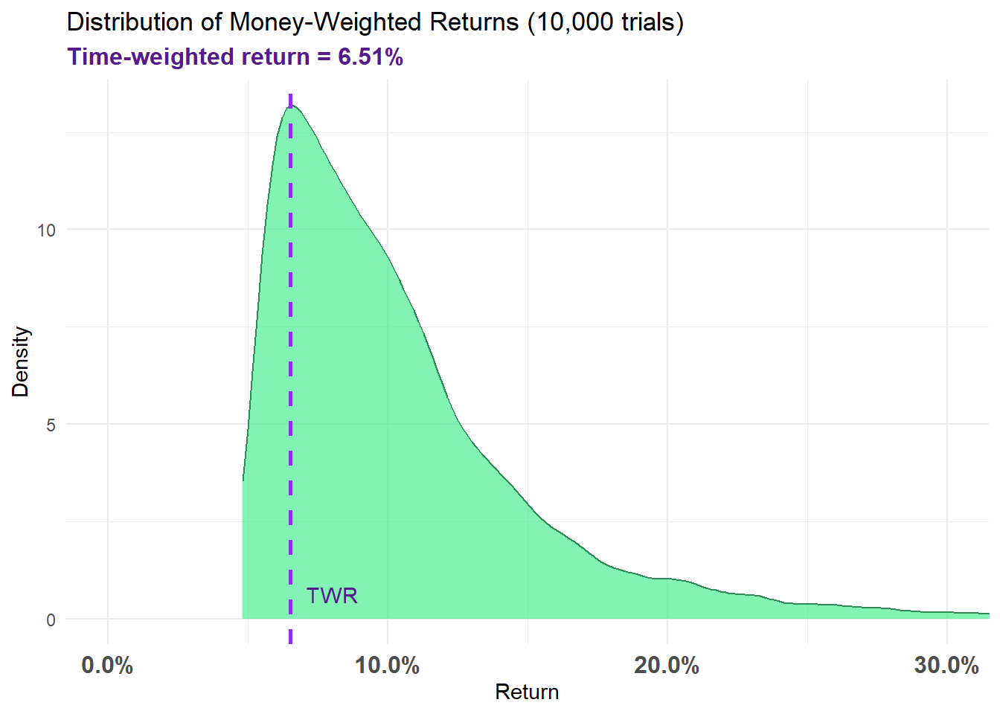

library(tidyverse)
# library(FinancialMath)
# Set seed for reproducibility
set.seed(123)
# Parameters
initial_account_balance <- 10000
initial_price <- 100
volatility <- 0.2
initial_dividend <- 2.00 # Initial dividend is $2.00
dividend_growth_rate <- 0.05
years <- 5
risk_free_rate <- 0.05
# Generate stock prices
stock_prices <- numeric(years)
stock_prices[1] <- initial_price
for (i in 2:years) {
stock_prices[i] <- round(stock_prices[i-1] * exp(rnorm(1, mean = 0, sd = volatility)),2)
}
# Calculate dividends
dividends <- numeric(years)
dividends[1] <- initial_dividend
for (i in 2:years) {
dividends[i] <- dividends[i-1] * (1 + dividend_growth_rate)
}
# Function to generate investment vector
generate_investment_vector <- function() {
vec <- c(runif(4), 1) # Generate 4 random numbers between 0 and 1, and add 1 at the end
vec[5] <- -1 # Set last element to -1 (100% divestment)
return(vec)
}
# Function to calculate cash flows and portfolio value
calculate_cash_flows <- function(investment_vector) {
cash_balance <- initial_account_balance
shares <- 0
cash_flows <- numeric(years)
cash_balance_history <- numeric(years)
for (year in 1:years) {
if (year > 1) {
# Add dividends from previous year and grow cash balance
cash_balance <- cash_balance * (1 + risk_free_rate) + shares * dividends[year-1]
}
cash_balance_history[year] <- cash_balance
if (year < years) {
# Years 1 to 4: Potential investments
if (investment_vector[year] > 0) {
investment <- investment_vector[year] * cash_balance
new_shares <- investment / stock_prices[year]
shares <- shares + new_shares
cash_balance <- cash_balance - investment
cash_flows[year] <- -investment
} else {
cash_flows[year] <- 0
}
} else {
# Final year (year 5): Liquidate all shares and cash balance
final_value <- (shares * stock_prices[year]) + cash_balance
cash_flows[year] <- final_value
}
}
return(list(cash_flows = cash_flows, cash_balance_history = cash_balance_history, final_shares = shares))
}
# Function to calculate IRR (Money-Weighted Return)
calculate_irr <- function(cash_flows) {
irr <- function(r) {
sum(cash_flows / (1 + r)^(0:(length(cash_flows)-1)))
}
# Try to find the root within a reasonable range
tryCatch({
mwr <- uniroot(irr, c(-0.9, 5))$root
return(mwr)
}, error = function(e) {
# If uniroot fails, return NA
return(NA)
})
}
# Function to calculate Time-Weighted Return (TWR)
calculate_twr <- function(stock_prices, dividends) {
hpr <- numeric(length(stock_prices) - 1)
for (i in 1:(length(stock_prices) - 1)) {
hpr[i] <- (stock_prices[i+1] + dividends[i] - stock_prices[i]) / stock_prices[i]
}
twr <- prod(1 + hpr)^(1/(length(hpr))) - 1
return(twr)
}
# Simulate Money-Weighted Returns (MWR) and Time-Weighted Returns (TWR)
n_simulations <- 10000
mwr_results <- numeric(n_simulations)
twr_results <- numeric(n_simulations)
failed_irr_count <- 0
# Specific scenario
specific_scenario <- c(0.25, 1/3, .5, 1, -1)
specific_result <- calculate_cash_flows(specific_scenario)
specific_mwr <- calculate_irr(specific_result$cash_flows)
specific_twr <- calculate_twr(stock_prices, dividends)
cat("\nSpecific Scenario {25%, 33.3%, 50%, 100%, -100%}:\n")
Specific Scenario {25%, 33.3%, 50%, 100%, -100%}:cat("Investment Vector:", specific_scenario, "\n")Investment Vector: 0.25 0.3333333 0.5 1 -1 cat("Cash Flows:", specific_result$cash_flows, "\n")Cash Flows: -2500 -2641.667 -2831.026 -3165.971 13850.05 cat("Cash Balance History:", specific_result$cash_balance_history, "\n")Cash Balance History: 10000 7925 5662.053 3165.971 265.9224 cat("Final Shares:", specific_result$final_shares, "\n")Final Shares: 114.8569 cat("MWR:", specific_mwr, "\n")MWR: 0.09269345 cat("TWR:", specific_twr, "\n\n")TWR: 0.06511804 # Run simulations
for (sim in 1:n_simulations) {
investment_vector <- generate_investment_vector()
result <- calculate_cash_flows(investment_vector)
mwr <- calculate_irr(result$cash_flows)
if (is.na(mwr)) {
failed_irr_count <- failed_irr_count + 1
} else {
mwr_results[sim] <- mwr
}
}
# Calculate TWR (same for all simulations as it doesn't depend on cash flows)
twr <- calculate_twr(stock_prices, dividends)
# Remove non-finite values from mwr_results
mwr_results <- mwr_results[is.finite(mwr_results)]
# Print results
cat("\nStock Prices:", stock_prices, "\n")
Stock Prices: 100 89.4 85.38 116.61 118.27 cat("Dividends:", dividends, "\n")Dividends: 2 2.1 2.205 2.31525 2.431013 cat("\nMoney-Weighted Returns (MWR) Summary:\n")
Money-Weighted Returns (MWR) Summary:print(summary(mwr_results)) Min. 1st Qu. Median Mean 3rd Qu. Max.
0.04825 0.07064 0.09257 0.10793 0.12391 0.93867 cat("\nTime-Weighted Return (TWR):", twr, "\n")
Time-Weighted Return (TWR): 0.06511804 cat("Number of failed IRR calculations:", failed_irr_count, "\n")Number of failed IRR calculations: 0 # Plot
mwr_df <- data.frame(MWR = mwr_results)
p <- ggplot(mwr_df, aes(x = MWR)) +
geom_density(fill = "seagreen2", color = "seagreen4", alpha = 0.7) +
geom_vline(aes(xintercept = twr), color = "purple2", linetype = "dashed", size = 1) +
theme_minimal() +
labs(title = "Distribution of Money-Weighted Returns (10,000 trials)",
subtitle = "Time-weighted return = 6.51%",
x = "Return",
y = "Density") +
theme(axis.text.x = element_text(size = 12, face = "bold"),
plot.subtitle = element_text(size = 12, color = "purple4", face = "bold")) +
annotate("text", x = twr, y = 0, label = "TWR", vjust = -1, hjust = -0.3, color = "purple4") +
scale_x_continuous(labels = scales::percent_format(accuracy = 0.1)) +
coord_cartesian(xlim = c(0, 0.3))
print(p)